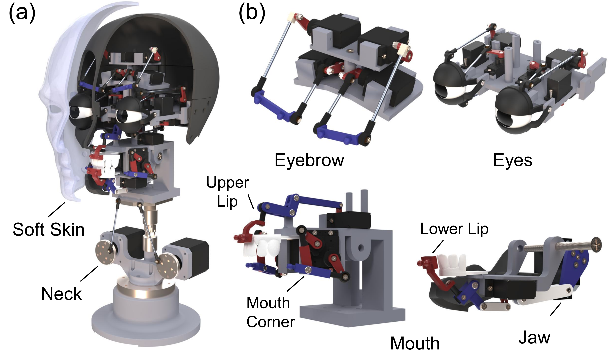
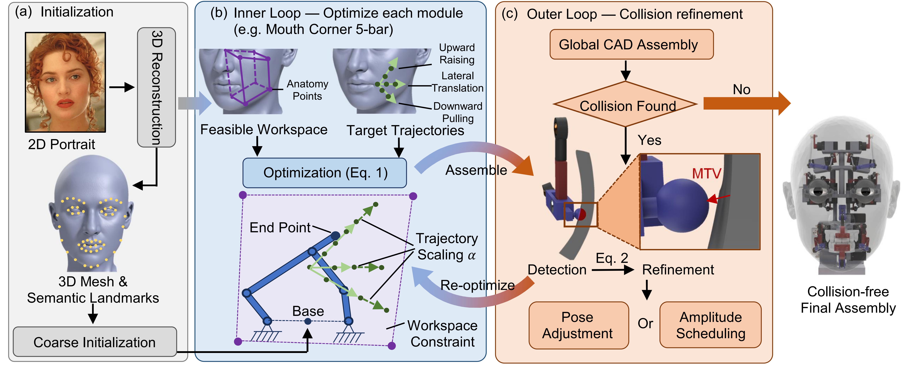
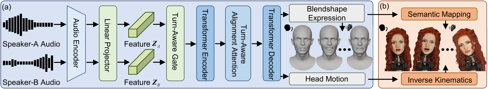

Real-Time Human-Robot Interaction
A live dialogue with the robotic head, demonstrating real-time inference, conversational turn-taking, lip synchronization, and affective facial motion during a semi-structured exchange.
1 Institute for AI Industry Research (AIR), Tsinghua University
2 Beijing Academy of Artificial Intelligence (BAAI)
3 Institute for Interdisciplinary Information Sciences (IIIS), Tsinghua University
4 Beihang University
* Equal contribution † Corresponding author
Animatronic faces are a central component of socially interactive robots, enabling rich nonverbal communication through facial articulation. However, state-of-the-art animatronic faces are typically tailored systems: each new facial geometry requires extensive manual mechanical redesign, making large-scale personalization prohibitively slow and costly. In this work, we pursue automated and scalable mechanical face synthesis, aiming to rapidly generate a physically realizable facial mechanism for a wide range of facial geometries. We introduce a parametric, linkage-driven mechanical face template whose topology and actuator layout are explicitly parameterized to support systematic scaling and retargeting across diverse facial morphologies. Building on this template, we propose a hierarchical automatic design algorithm that takes a single 2D portrait as input, reconstructs a target 3D face, and synthesizes a collision-free, manufacturable internal mechanism. The algorithm combines anatomy-guided feasible motion volumes, Action Unit (AU)-derived trajectory-based expressiveness objectives, and a collision-driven outer-loop refinement strategy. Beyond hardware synthesis, we argue that future mechanical faces deployed at scale must engage in bidirectional, multi-turn conversation, rather than functioning solely as speaking or listening heads. To this end, we develop a dual-identity conversational facial motion synthesis framework that jointly models speaking and listening behaviors from audio, producing temporally coherent 3D facial motion suitable for physical execution. We validate our system through extensive experiments, including (i) quantitative evaluation of automatic mechanism synthesis across diverse facial geometries, (ii) comparisons against manual mechanical design, (iii) benchmarks on conversational facial motion synthesis and real-time deployment, and (iv) perceptual user studies.
The system starts from a reusable, linkage-driven face template whose modules can be scaled and retargeted to new facial geometries.

Given a portrait, the pipeline reconstructs the target face, initializes module placement, optimizes local mechanisms, and resolves collisions in the final CAD assembly.

The same template generalizes across human, stylized, and non-human faces, producing valid internal mechanisms at relative physical scale.

Beyond hardware generation, the system synthesizes conversational facial motion and maps it to physically executable motor commands.

These supplementary demonstrations show the complete system in live human-robot dialogue, robot-robot reenactment, and mixed physical-digital interaction scenarios.
A live dialogue with the robotic head, demonstrating real-time inference, conversational turn-taking, lip synchronization, and affective facial motion during a semi-structured exchange.
A physical reenactment between Rose and Jack, emphasizing soft emotional expression, responsive listening cues, and coordinated multi-round robot-robot interaction.
Luke Skywalker and Yoda are embodied as two physical faces, testing distinct speaking styles, listener reactions, and expressive timing across an iconic cinematic exchange.
A mixed-reality conversation between a digital avatar and the physical robot, showing how the motion synthesis framework transfers across heterogeneous embodiments.
@inproceedings{zhang2026automated,
title = {Automated Synthesis of Facial Mechanisms for Conversational Animatronic Robots},
author = {Zhang, Zongzheng and Lin, Zi and Yang, Jiawen and Peng, Ziqiao and Lao, Junyan and Cheng, Lin and Xu, Huazhe and Zhao, Hang and Zhao, Hao},
booktitle = {Robotics: Science and Systems (RSS)},
year = {2026}
}